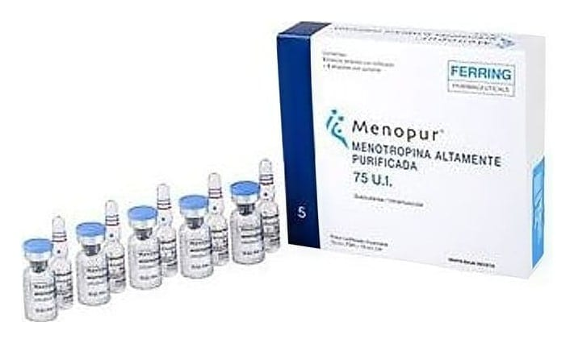

Menopur 75 IU IM Ve SC Enjeksiyon İçin Toz İçeren Flakon, 5 Adet

Ne için kullanılır
KT · Bölüm 1MENOPUR kullanılmadan önce bir sıvı (çözücü) ile karıştırılması gereken kek formunda üretilmektedir. MENOPUR, 5 toz flakonu ve 5 çözücü sıvı ampulü içeren ambalajlar halinde piyasaya sunulmaktadır. MENOPUR, iki farklı hormonal aktiviteye sahiptir; folikül uyarıcı hormon (FSH) ve luteinizan hormon (LH). FSH ve LH, hem kadınlarda hem de erkeklerde üretilen doğal hormonlardır. Üreme organlarının normal bir şekilde çalışmalarına yardımcı olurlar.
22.01.2018 MENOPUR sığır sütü kaynaklı laktoz monohidrat içermektedir. MENOPUR
aşağıdaki durumlarda, kısırlık (infertilite) tedavisi için kullanılmaktadır: Kadınlarda: Yumurtalık organları yumurta üretemediği için hamile kalamayan kadınlar (polikistik over hastalığı denilen çok sayıda yumurtalık kistinden oluşan tablo dahil). MENOPUR bu durumda, kısırlık tedavisi için klomifen sitrat adındaki bir ilacı kullanmış, ancak bu ilaçtan yarar görememiş kadınlarda kullanılır. Yardımla üreme teknikleri uygulanan kadınlarda; örneğin in vitro fertilizasyon/embriyo transferi (IVF/ET), gamet fallop tüpleriyle transfer (GIFT) ve sitoplazma içine sperm enjeksiyonu (ICSI). MENOPUR, kadınların yumurtalıklarında, içinde bir yumurtanın büyüyebileceği çok sayıda yumurta kesesinin gelişmesine yardımcı olur.
Erkeklerde: Belirli bir hormonal yetmezlik (hipogonadotropik hipogonadizm) formundan dolayı kısırlık sorunu olan erkeklerde sperm oluşumunun uyarılmasında kullanılır.